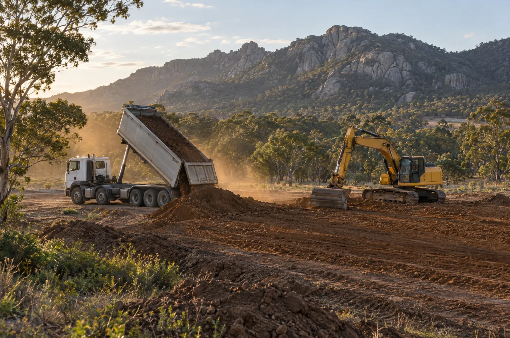
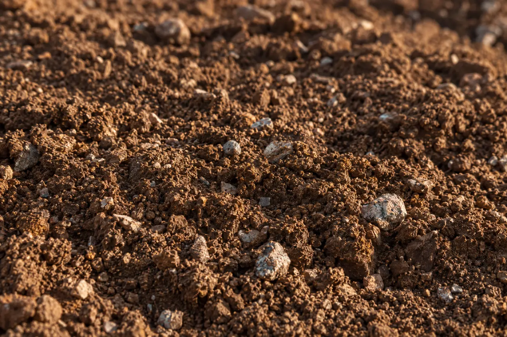

Home / Soil disposal
Every suitable load helps restore the land.
We accept suitable soil from construction, infrastructure and development projects. Recovered material is used, where appropriate and permitted, in the progressive rehabilitation of the former sand quarry.
Soil checker
Can we take your soil?
A one-minute guide before you fill in the full declaration. If it looks like a fit, we'll carry your answers straight across.

What are you looking to get rid of?
Select everything in the load.
A few quick safety questions.
About the material and the site it's coming from.
A guide only. Acceptance is confirmed after we review your soil declaration and inspect the load on arrival.
Acceptance criteria
What we can and can't take.
We may reject any load at inspection if it doesn't match its declaration or our acceptance criteria. Rejected loads are removed at the producer's cost.
Accepted, subject to declaration
- Fill soil
- Clean fill with rock
- Clean fill with vegetation
- Mixed fill
- Mudstone
Not accepted
- Asbestos or any asbestos-containing material
- Reportable priority waste (categories A–D)
- Waste acid sulfate soil
- Material showing signs of contamination (staining or odour) without an assessment
- General rubbish, household waste, green waste or demolition waste
The process
How to deliver to LG Recycling.
Declared, approved, then delivered. Nothing arrives on site unannounced.
Enquire
Send us the source address, material type, estimated quantity and timing.
Declare
Complete the online soil declaration. Attach a waste classification assessment if one has been done.
Approval
We review the declaration and confirm acceptance, delivery windows and any conditions.
Deliver
Drivers check in on arrival, follow the site rules, and each load is inspected before tipping.
Before you book
Have this ready.
You'll need these details for the declaration.
Pricing: Rates / quote process TBC
- Address of the waste source and the activity that generated it
- Current and historic land use of the source site
- Material type and estimated quantity (tonnes or m³)
- Waste classification assessment, if completed
- Waste producer and transport company details
- Expected start and finish dates
Do I need a declaration for every load?
Every load needs to be covered by an approved soil declaration. Complete one declaration per source site, and don't deliver until we've confirmed acceptance.
What are your opening hours?
Monday to Friday, 7am – 3pm. Deliveries are by prior approval only.
Do I need a waste classification assessment?
If one has been completed, attach it to your declaration. Material showing signs of contamination, such as staining or odour, can't be accepted without an assessment.
What happens if my load doesn't match the declaration?
Every load is inspected before tipping. We may reject any load that doesn't match its declaration or our acceptance criteria, and rejected loads are removed at the producer's cost.
What do drivers need on site?
High-visibility clothing, enclosed safety boots, a hard hat in active operational areas, and a UHF two-way radio on channel 61. No children, animals or open footwear. Full site rules.
How much does it cost?
Rates / quote process TBC
What happens to the soil?
Where appropriate and permitted, recovered soil helps rebuild landforms, restore levels and contours, and repair ground disturbed by historic sand extraction on the property.
Not soil?
We're the wrong site for rubbish.
For general rubbish, household clean-outs or construction and demolition waste, LG Recycling isn't the right site. Nearby alternative disposal options TBC
Got suitable soil?